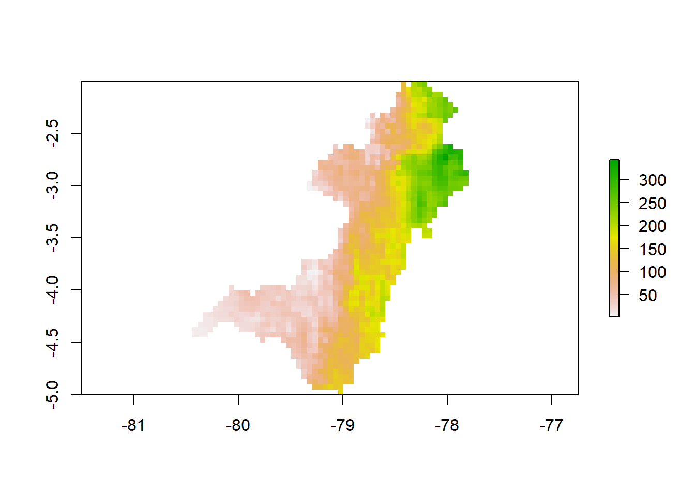
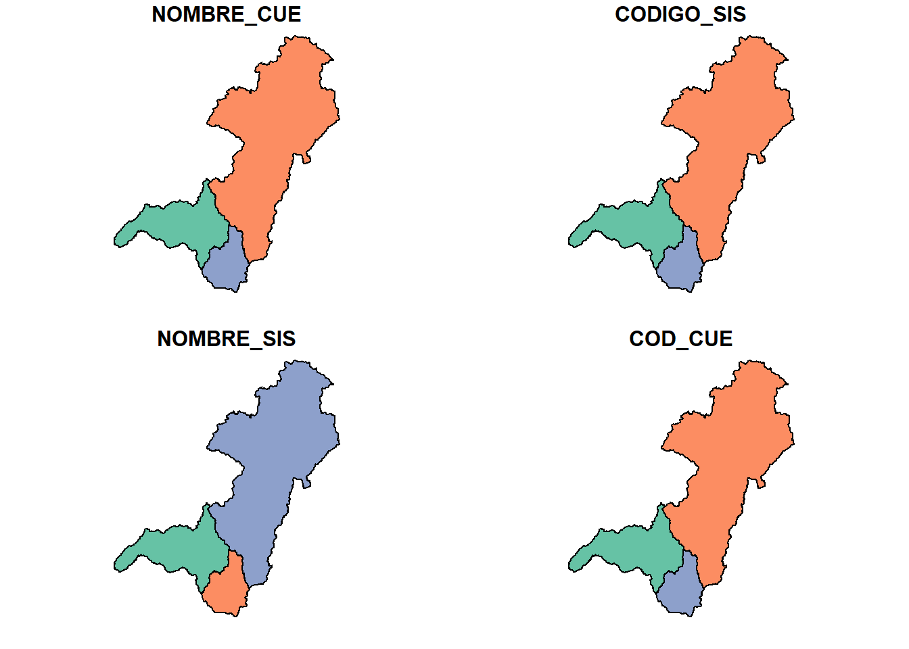
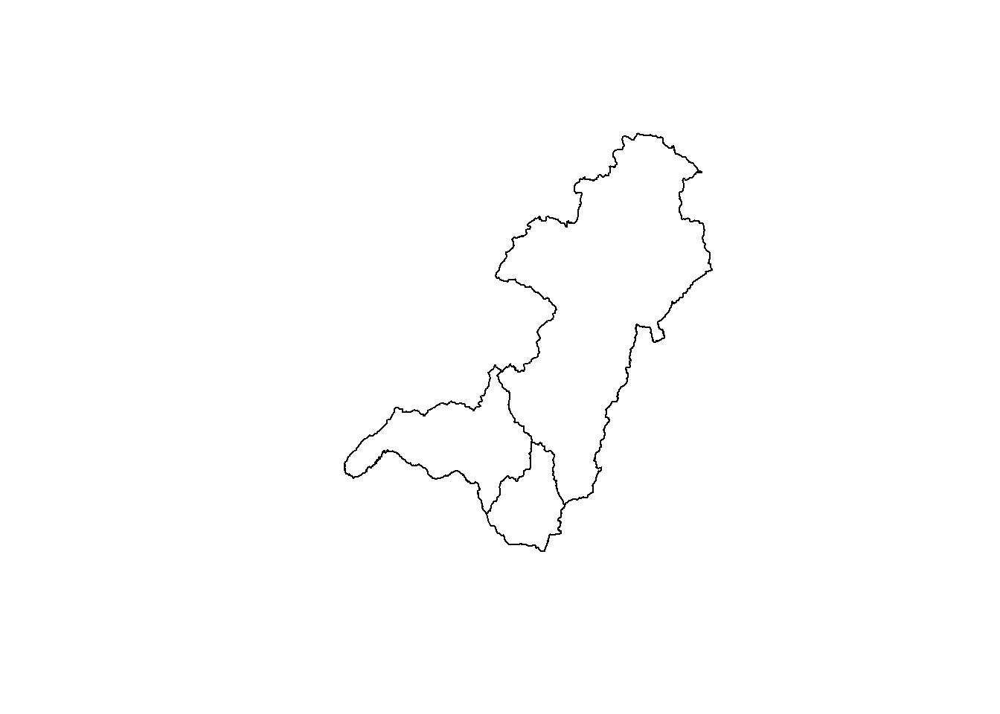
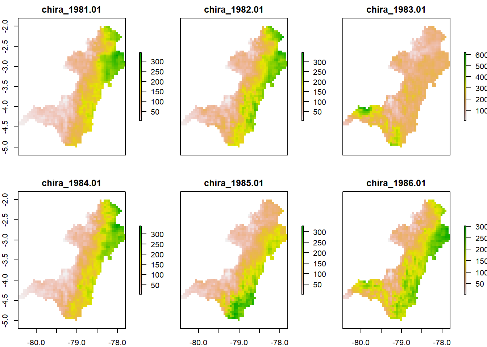

Universidad Técnica de Machala
Facultad de Ciencias Agropecuarias
Carrera de Agronomía
Geomática
Datos Informativos
Docente: Ing. Agr. Angel Eduardo Luna Romero
Semana: 7
setwd("C:/Users/Eirck/Desktop/diarios/")
library(pacman)
p_load(tidyverse, sf, sp, rgdal, raster,glue,RColorBrewer)sf_representa características simples como registros en una data.frameo tibblecon una columna de lista de geometría sp_Este paquete proporciona clases de S4 para importar, manipular y exportar datos espaciales en R cargar una imagen
img <- raster("CHIRPS/chira_1981.01.tif")
plot(img)
imgs <- list.files("./CHIRPS/", full.names = T, pattern = ".tif$")opcion1
bsn <- st_read("CUENCAS.shp")## Reading layer `CUENCAS' from data source `C:\Users\Eirck\Desktop\diarios\Fer9819.github.io\CUENCAS.shp' using driver `ESRI Shapefile'
## Simple feature collection with 3 features and 4 fields
## Geometry type: POLYGON
## Dimension: XY
## Bounding box: xmin: -80.45177 ymin: -5.011824 xmax: -77.79864 ymax: -2.001942
## Geodetic CRS: WGS 84plot(bsn)
opcion2
cnc <- shapefile("CUENCAS.shp")
plot(cnc)
sleccion o filtro de valores de un vector
obj <- "01.tif"
obj2 <- grep(obj,imgs, value = T)Operación con raster
obj3 <- lapply(obj2,FUN = raster) %>% stack()
plot(obj3)
calcular valor promedio
prm <- mean(obj3, na.rm=T)Estadistica zonal ——————————————————-
cnc@data$id <- 1:nrow(cnc@data)pasar de vectorial shapefile a vectorial
cnc_r <- raster::rasterize(cnc,prm,field = "id")estadistica zonal
znl <- raster::zonal(prm,cnc_r, fun= mean)
head(znl)| zone | value |
|---|---|
| 1 | 89.66288 |
| 2 | 139.17346 |
| 3 | 167.14002 |
cadena de texto
aux <- "compañero"
aux1 <- str_replace(aux, pattern = "ñ" , replacement = "nh")
head(aux1)## [1] "companhero"paste0 para pegar texto
tbl <- data.frame(meses = month.abb, mes= 1:12)
mnt <- "01.tif" preparar la tabla
rsl <- znl %>%
as_tibble() %>%
inner_join(.,cnc@data, by = c("zone" = "id")) %>%
mutate(NOMBRE_CUE = str_replace(NOMBRE_CUE,
pattern = "�",
replacement = "i")) %>%
dplyr::select(zona = zone, cuenca = NOMBRE_CUE, PP= value) %>%
mutate(PP = as.numeric(PP) %>% round(.,digits = 2),
mes= str_replace(mnt, pattern = ".tif",
replacement ="" ) %>% as.numeric()) %>%
inner_join(., tbl, by = c("mes")) %>%
dplyr::select(-mes)
head(rsl)| zona | cuenca | PP | meses |
|---|---|---|---|
| 1 | 70 R�o Chira | 89.66 | Jan |
| 2 | 78 R�o Santiago | 139.17 | Jan |
| 3 | 79 R�o Mayo | 167.14 | Jan |